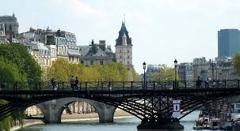
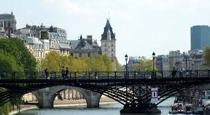

FRANCE
 

France, in Western Europe, encompasses medieval cities, alpine villages and Mediterranean beaches. Paris, its capital, is famed for its fashion houses, classical art museums including the Louvre and monuments like the Eiffel Tower. The country is also renowned for its wines and sophisticated cuisine. Lascaux�s ancient cave drawings, Lyon�s Roman theater and the vast Palace of Versailles attest to its rich history.
The Eiffel Tower, one of the must sees in Paris, can't be missed from any spot while walking around in the city. It was built by the French engineer Gustave Eiffel which was already famous at the time for building bridges. He spent several years building the Eiffel Tower as a monument for the World Exhibition in 1889. Although today, it is without doubt one of the most recognizable monuments in Europe, one that can be compared to the Statue of Liberty in New York, the Big Ben is London and the Taj Mahal in India, it was not supposed to be permanent when it was first introduced. After the Eiffel Tower was built, it faced a lot of criticism from Paris artistic and literary elite. The fact is, that the tower was almost torn down sometime in 1909 while the only reason it was eventually kept was due to its ability to provide a perfect platform for transmitting antennas.